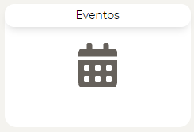
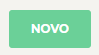
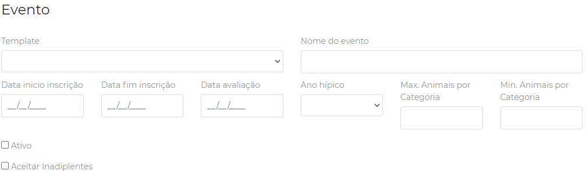
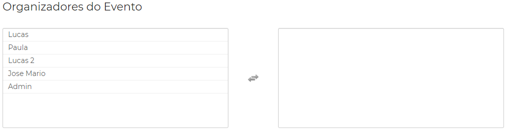
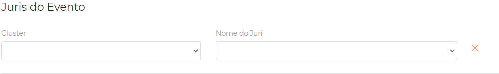
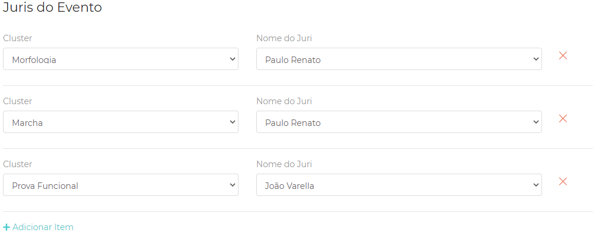
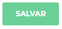

|
<< Click to Display Table of Contents >> Navigation: Novo evento > Criando novo evento |
Portal ajuda Campolina - Eventos e Ranking! Parceiro.
A criação do novo evento é realizada pelo administrador do sistema ou responsavél com permissões para tal ação. O processo de criar novo evento é o primeiro passo para se iniciar toda e qualquer tarefa no sistema.
Criando novo evento!
1.Clique em Eventos.

2.Clique no botão novo.

3.Escolha o template adequado para o evento. Lembre-se de escolher o evento relacionado com a quantidade de animais resgistrados ou na conformidade do evento a ser realizado. A seguir preencha os campos com as informações adequadas. OBS: marque a caixa ATIVO para deixar o evento apto para receber os registros.

4.Nas opções abaixo você administrador ou responsável deverá selecionar para a caixa da direita os organizadores registrados no sistema. Caso não exista o organizador, entrar em contato com a equipe Campolina de TI ou administrador para criar o acesso do organizador.

5.Seguindo os passos, deve agora escolher os jurados do evento. Na caixa categoria/cluster você deverá selecionar a categoria de avaliação e em seguida o nome do jurado. Lembre-se uma categoria pode ter vários jurados e também o mesmo jurado pode estar relacionado a várias categorias para avaliar.

6.Clique em +Adicionar Item para acrescentar os jurados e as categorias em questão como exemplo abaixo.

7.Clique no botão salvar.

8.Verifique as informações do evento, caso necessário clique em Editar para corrigir ou Voltar para ir a tela de eventos ou ainda pode ir diretamente no menu lateral em Competição.